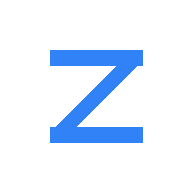

내 자산
1억원으로 시작한 ZERO의 보유 자산과 잔여자금을 확인하세요.
총자산과 수익률 시작 원금 1억원 · ZERO 참고 원장
- ZERO 총자산 참고
- 미확인
- 보유종목 평가액 + 잔여자금
- ZERO 누적수익률 참고
- 미확인
- 시작 원금 1억원 대비 · 비용 미반영
- 참고 평가손익미확인
- 보유종목 평가액
- —
- ZERO 계획 수량 · 원화 환산
- 잔여자금 참고
- 미확인
- 매매대금 반영 · 실제 결제 현금 미확정
참고 계산 · 세금·수수료·배당 미반영 · 실제 결제 현금 미확정
계산 기준과 계좌 범위 확인
동결 계획과 확정 체결로 계산한 참고 원장입니다. 실제 결제 현금과 검증된 세후 순자산은 별도 대조가 필요합니다.
1억원 계획·확정 체결·현재 보유분 대조 후 표시합니다.
- ZERO 시작 원금
- 1억원
- 보유분 매입금액 증권사 평균 단가 · 현재환율 참고
- —
1억원 범위·잔여자금의 계산 근거
시작 보유분을 당시 계획의 기준가격으로 평가해 1억원에 배정한 가상 참고 계산입니다. 현재 보유분의 매입금액을 1억원에서 빼서 현금을 맞추지 않습니다. 거래비용·세금·배당·결제와 실제 환전 내역이 미확정이므로 검증된 순자산·세후 수익률로 해석하지 않습니다. 별도 종목과 같은 종목의 초과 수량은 제외합니다.
보유분 가격수익률 —현금·실현손익 제외
가격 기준 평가손익 —
- 미국 ZERO 보유분 USD 가격 기준
- —
- —
- 한국 ZERO 보유분 KRW 가격 기준
- —
- —
보유분의 현재 평가액을 증권사 평균 단가 × 해당 수량과 비교합니다. 매입금액과 평가액에 같은 현재환율을 적용하며 현금·실현손익·배당·수수료·세금·과거 환율 변화는 제외합니다. 별도 동일 종목과 평균 단가가 섞이면 해당 매입금액과 손익은 보류합니다.
검증된 세후 누적수익률 집계 보류원장 대조 필요
참고 원장과 별도로, 승인된 ZERO 소유 원장과 실제 입출금·매매·환전·배당·비용·결제 근거를 대조해야 확정합니다. 참고 수익률을 매매 승인이나 손실 한도 판단에 사용하지 않습니다.
연결 계좌 전체 잔액 · ZERO와 범위가 다름
- 국내·미국 조회 자산 합계
- 미확인
- 국내 결제 반영 예상 현금
- 미확인
- 미국 조회 현금
- 미확인
- 결제 전 국내 예수금
- 미확인
증권사가 제공하는 별도 예수금이 포함됩니다. 이 잔액을 ZERO의 1억원 운용자산에 더하지 않습니다. 결제 전 예수금과 결제 반영 예상 현금을 중복 합산하지 않습니다.
ZERO 보유 종목
가격 기준 · 수수료·세금·환율 손익 제외
| 종목 / 시장 | 보유 수량 | 평균 단가 | 현재 가격 | 가격 기준 평가손익 | 종목별 수익률 가격 기준 |
|---|
손실 한도 정하기 전에 볼 숫자
지금 비중 그대로 5년 전에 샀다면 · 가격 기준 · 배당·비용·세금·환율 제외
버튼을 누르면 보유 종목과 S&P 500(SPY)의 5년 일별 종가로 계산합니다. 참고 자료일 뿐 검증된 백테스트가 아니며, 어떤 값도 적용되지 않습니다. 손실 한도는 대표님이 정합니다.
S&P 500에 투자했다면
지수 가격으로 계산한 참고값 · 배당·세금·수수료·환전 비용 제외
첫 매수 기록과 지수·환율의 기준일을 확인한 뒤 표시합니다.
- 달러 기준 지수 가격수익률
- —
- 기준일 미확인
- 환율 고정 참고 평가액
- —
- 참고 평가이익 미확인
- 환율 반영 원화 참고 평가액
- —
- 수익률 미확인
- 공식 공통 관측일 미확인
달러 기준 지수가 올라도 달러 값이 원화 대비 내려가면, 원화 기준 이익은 작아지거나 손실이 될 수 있습니다.
시작 기준·계산 가정과 출처
실제 ETF의 배당·비용·세후 수익률과 다릅니다. 보유종목 평가수익률과 기준일·계산 범위가 달라 초과수익 비교를 하지 않습니다. ZERO 계좌 누적수익률은 원장 대조 후 확인합니다.
1억원을 TQQQ에 투자했다면
실제 ETF 종가에 따른 별도 참고 가정 · 배당·수수료·세금·환전 비용 제외
기존 첫 매수 기록과 TQQQ 종가·공식 환율의 기준일을 확인한 뒤 표시합니다.
- 달러 기준 ETF 가격수익률
- 근거 없음
- 미국 거래일 미확인
- 환율 고정 참고 평가액
- 근거 없음
- 참고 차액 미확인
- 공식 환율 반영 원화 참고 평가액
- 근거 없음
- 참고 수익률 미확인
- 공식 공통 관측일 미확인
액면분할을 반영한 실제 ETF 종가를 사용합니다. 펀드 운영비용의 영향은 ETF 가격에 이미 반영돼 있습니다. 배당 재투자·개인 거래 수수료·세금·환전 비용은 반영하지 않습니다.
TQQQ는 Nasdaq-100의 하루 수익률 3배를 목표로 합니다. 매일 달라지는 수익률이 누적되므로 장기 수익률이 지수의 3배가 된다는 보장은 없습니다.
출처 자료에 기반한 참고 계산이며 독립 검증은 미완료입니다. ZERO의 TQQQ 보유·실제 이익이나 기존 자산과 동일 기간의 성과를 뜻하지 않습니다.
시작 기준·가격·환율의 확인 시각과 출처
종목별 보유 비중
원화 환산 보유 평가액 기준 · 현금 제외
ZERO 평가 기록
동일한 1억원 범위의 과거 기록을 확인한 뒤 표시합니다.
입출금·매매·환율 변화가 섞인 평가액 기록입니다. 투자 수익률이나 S&P 500 대비 성과가 아닙니다.
현재 보유 시장 비중
원화 환산 보유 평가액 기준 · 현금 제외
- 미국 상장
- —
- 한국 상장
- —
상장 시장 기준이며 기업의 실제 매출 지역·경제적 노출과 다를 수 있습니다.
지금 근무 중인 팀
지금 근무 중인 ZERO 팀이에요.
“ZERO 트레이딩 플로어에 어서 오세요.”
팀 명부를 불러오지 못했어요.
입문 전
다음: 주식이 뭔가요?
매수·매도부터 ZERO 사용법까지, 문제를 풀며 레벨을 올려요.
ZERO 공식 사무실의 직원은 정해진 명부(가상 직원)예요. 내가 원하는 성격의 직원, 팀과 팀장, 맡은 일, 사무실 꾸밈은 "내 사무실"에서 직접 만들어요.
방향키·WASD로 걷고, 바닥을 누르면 그곳으로 가요. 직원을 누르면 대화해요. 직원은 가상 인물이며 정해진 대본으로 답해요. 투자 권유는 하지 않아요.
ZERO 팀 사무실
팀별 사무실과 중앙 회의실에서, 누가 어떤 일을 맡는지 둘러보세요.
업무 처리 상태 확인 중…
팀원 명부를 불러오는 중…
회의 연출 · 총괄과 팀장들의 업무 협의
발표 근거와 전체 내용
말풍선은 실제 요청 상태와 담당 업무를 보여줍니다. 회의 장면은 팀의 협의 구조를 표현하며, 발표에는 저장된 결과나 담당 원칙을 사용합니다.
총괄 조율 원칙 · 각 팀의 근거와 미확인 사항을 모아 다음 조사를 정합니다. 이 회의 장면 자체는 실제 합의·투자 결정 기록이 아닙니다.
팀별 요청 처리 현황
현재 저장된 최대 128건 기준 · 인재 능력이나 투자 성과 평가가 아닙니다.
처리 기록을 확인하고 있습니다.
선택한 팀원의 업무와 최근 기록
맡긴 일의 진행 기록
업무 기록을 확인하고 있습니다.
업무 기록과 처리 시간 안내
실제 처리 시간은 저장된 실행 정책을 확인해 표시합니다. 화면이 보이는 동안 30초마다 상태를 읽습니다. 결과 제출은 독립 검증이나 투자 승인을 뜻하지 않습니다. 투자자 이름은 공개 원칙을 참고한 가상 역할이며 실제 참여를 뜻하지 않습니다.
팀별 담당 업무
각 팀의 책임자와 실무 담당자가 맡은 일입니다. 원하는 팀원에게 바로 일을 맡길 수 있습니다.
팀별 업무를 불러오는 중…
직원별 제출 기록·처리 시간·비용
팀 구성·운영 기준·검토 기록
전문적인 판단, 하나의 최종 책임
수석 책임자들은 기존 전문 모듈의 검증 결과를 공유합니다. 전원 동의나 다수결을 요구하지 않으며, 최종 판단과 책임은 ZERO 최종 관리자에게 있습니다.
30년 경력·최상위 금융기관 경험은 가상 역할 설정입니다. 실제 인물의 고용이나 해당 기관의 참여를 의미하지 않습니다.
ZERO 최종 관리자
단일 관리자가 최종 판단을 책임집니다. 공통 업무 지시 자료는 미확인입니다.
가상 실무 구성 미확인 · 자율 실행 없음
업무 배정 자료 미확인
공통 지시와 관리자 산출물
- 공통 업무 지시 자료 미확인
총괄 관리자 · 뉴스 검토 기록
뉴스 검토 기록 미확인
제출된 원문 검토 기록입니다. 원문 열람의 독립 검증·판단력 향상·모델 재훈련을 증명하지 않습니다.
팀원 → 팀장 → 총괄 책임자
팀원은 근거와 개별 의견을 제출하고, 팀장은 반대·미제출을 보존해 종합합니다. 총괄 책임자는 최종 이유와 다음 업무를 기록합니다.
회의 제출 현황 미확인
제출 기록 · 수행·독립 검증 별도. 운영·검토 제안 채택은 매매 실행 승인이 아닙니다.
업무 우선순위와 납품 근거
근거 없음 · 보고서 자료 미확인 · 수행 미확인 · 주문 승인 없음
새 전략 승인 보류 · 정책 미확인
근거 없음 · 정책 자료 미확인 · 주문 승인 없음
새 전략 검토에만 적용합니다. 기존에 승인된 운용 업무는 별도로 유지합니다.
계기별 업무 배정
배정은 수행·검증 완료를 뜻하지 않습니다. 선행 업무는 작업 순서이며 매매 승인 조건이 아닙니다.
배정된 업무 지시 보기 · 읽기 전용
화면 품질팀 · 4개 역할과 검수 지시
가상 역할 · 제품 품질 검수 · 매매 판단과 의결 권한 없음
- UX·UI 수석
- 보유 종목을 먼저 찾도록 정보 순서와 읽기 흐름을 설계합니다.
- 투자정보·데이터 시각화
- 금액·통화·비중의 기준과 미확인 값을 차트 옆에 명확히 표시합니다.
- 프런트엔드·접근성
- 재사용 가능한 화면과 키보드·모바일 사용성을 구현합니다.
- 사용성 검증
- 작은 화면·긴 종목명·조회 실패 상황에서 실제 사용 흐름을 점검합니다.
오늘의 기업 순위
시가총액으로 보는 시장 · 기업을 누르면 사업과 실적을 확인합니다.
기업 자료를 불러오면 표시합니다.
순위 기준·출처
주요 ETF · 순위와 별도
기업 자료를 아직 불러오지 않았습니다.

아이폰에 ZERO 설치하기
홈 화면에서 아이콘을 눌러 내 자산으로 바로 들어오세요.
- 아이폰의 Safari에서 이 사이트를 열고 로그인하세요.
- 공유 버튼을 누르고 홈 화면에 추가를 선택하세요. 메뉴에 없다면 아래로 내려 찾아보세요.
- 웹 앱으로 열기가 보이면 켜고, 이름을 ZERO로 정한 뒤 추가를 누르세요.
- 홈 화면에 생긴 ZERO 아이콘을 누르면 앱 창으로 열립니다.
처음 앱을 열 때 로그인을 다시 요청할 수 있습니다. 자료를 조회하려면 인터넷 연결이 필요합니다.
숫자를 정확하게 읽는 방법
- 보유 종목 평가액
- 확인된 현재 가격 × 수량의 합계입니다. 환율이 확인되면 원화로 환산합니다. ZERO의 초기 1억원 동결 계획 수량과 이후 확정 체결을 대조합니다. 총자산 참고값은 이 보유 평가액과 계획·체결로 계산한 잔여자금의 합계입니다. 연결 계좌의 별도 예수금은 더하지 않습니다. 실제 결제 현금과 검증된 순자산은 별도 원장 근거가 필요합니다.
- 가격 기준 평가손익
- (현재 가격 − 평균 단가) × 보유 수량으로 계산한 현지통화 추정치입니다. 수수료·세금·과거 매수 환율은 반영하지 않으며, 실제 증권사 손익 확정값과 다를 수 있습니다.
- 설계 운용액과 목표 비중
- 1억원과 64%·16%·20%는 ZERO의 운용 정책입니다. 현재 계좌의 자산 또는 투자 완료를 뜻하는 숫자가 아닙니다.
- 조회 기록
- 연결 계좌 전체의 관측 기록을 ZERO 범위의 과거 기록으로 대신 표시하지 않습니다. 수익률 계산에는 입출금·배당·비용·세금·환율을 반영한 별도 원장이 필요합니다.
- 갱신과 데이터 상태
- ‘시세 새로고침’은 공개 시세(지연될 수 있음)와 환율로 ZERO 참고 보유분의 평가액을 다시 계산합니다. 보유 수량·잔여자금은 로컬 ZERO가 마지막으로 반영한 계좌 자료 기준이며, 계좌 조회·주문은 하지 않습니다.
연구 참고 저장소
자료 설명 화면을 열면 목록을 불러옵니다.
주식 입문 학교
매수·매도부터 ZERO 사용법까지, 문제를 풀며 레벨을 올려 보세요. 현재 입문 전
가격 그래프를 직접 읽어 보기
종목과 주기를 바꾸고, 봉을 움직여 실제 가격의 구조를 확인합니다.
공개 자료를 불러오면 기록 시각을 표시합니다.
가격 자료를 불러오면 그래프를 표시합니다.
읽을 가격 근거 없음
이동평균은 각 시점까지 확인된 일봉만 사용합니다.
봉, 이동평균, 변동성을 읽는 순서
- 캔들 한 개에 담긴 네 가격
- 시가는 구간의 첫 가격, 종가는 마지막 가격입니다. 몸통의 양 끝은 시가와 종가, 꼬리의 끝은 고가와 저가입니다. 이 화면은 종가가 시가 이상이면 빨강, 낮으면 파랑을 씁니다. 일봉은 하루의 흐름이고, 1·10·60분봉은 짧은 구간을 보여 줍니다.
- 이동평균 MA
- 5일 이동평균 = 그 시점까지 최근 5개 일봉 종가 합계 ÷ 5입니다. 20·60일도 같은 원리입니다. 들쭉날쭉한 가격을 완만하게 보지만 과거 평균이므로 늦게 반응합니다. 선의 교차만으로 이후 방향을 확정할 수 없습니다.
- VIX · 시장이 예상하는 흔들림
- S&P 500 옵션 가격에서 앞으로 약 30일의 예상 변동성을 구해 연율로 표시하는 지수입니다. 주가의 상승·하락 방향을 예측하는 숫자는 아닙니다. 높은 값은 큰 흔들림이 가격에 반영됐다는 뜻이며, 실제 VIX는 ‘세계 주요 지수’의 관측 날짜와 출처를 함께 읽습니다.
- 장기 판단과 분봉의 역할
- ZERO는 분기 점검과 장기 판단을 기본으로 합니다. 분봉의 잡음만으로 거래를 늘리면 수수료·세금·체결 차이가 쌓일 수 있습니다. 짧은 차트는 가격 형식을 공부하는 자료이며 기존 점검 주기나 매매 승인 조건을 바꾸지 않습니다.
기업 숫자를 가격과 연결하기
기간·통화·주식 종류가 맞는지 먼저 확인합니다. 아래 예시는 모두 학습용이고 특정 기업의 실제 실적이 아닙니다.
- EPS · 주당순이익
- 보통주에 귀속되는 순이익 ÷ 가중평균 보통주 수입니다. 학습 예로 순이익 100억원, 평균 주식 수 200만 주라면 EPS는 5,000원입니다. 우선주 배당, 희석 주식과 실제 공시의 산식을 확인해야 합니다.
- BPS · 주당순자산
- 보통주에 귀속되는 자기자본 ÷ 기준일 보통주 수입니다. 학습 예로 자기자본 1,000억원, 주식 수 200만 주라면 BPS는 50,000원입니다. EPS의 평균 주식 수와 BPS의 기준일 주식 수는 다를 수 있습니다.
- PER · 주가수익비율
- 주가 ÷ EPS입니다. 주가 100,000원과 연간 EPS 5,000원을 비교하면 20배입니다. EPS가 적자이거나 0이면 낮은 PER로 ‘싸다’고 판단할 수 없습니다. 연간·최근 12개월·예상 EPS를 섞지 않습니다.
- PBR · 주가순자산비율
- 주가 ÷ BPS입니다. 주가 100,000원과 BPS 50,000원이면 2배입니다. 장부에 기록된 자산과 실제 가치가 다를 수 있고 자기자본이 0·음수이면 일반적인 배수 해석이 어렵습니다.
- ROE · 자기자본이익률
- 같은 기간의 순이익 ÷ 평균 자기자본 × 100입니다. 순이익 100억원과 평균 자기자본 1,000억원이면 10%입니다. 단순히 기말 자기자본으로 대신하면 값이 달라질 수 있으며 부채 증가·일회성 이익도 살펴야 합니다.
- PSR · 주가매출비율
- 시가총액 ÷ 같은 기간의 매출액입니다. 학습 예로 시가총액 2,000억원과 연간 매출 1,000억원이면 2배입니다. 매출이 커도 이익이나 현금이 남는다는 뜻은 아닙니다.
- 이익률 · 매출 중 얼마를 남겼나
- 영업이익률 = 영업이익 ÷ 매출 × 100, 순이익률 = 순이익 ÷ 매출 × 100입니다. 매출 1,000억원에서 영업이익 100억원이면 10%입니다. 매출과 이익은 같은 회계기간·범위·통화를 사용합니다.
- 잉여현금흐름 FCF
- 대표적인 산식은 영업활동 현금흐름 − 설비투자 지출입니다. 영업 현금 150억원에서 설비투자 70억원을 빼면 80억원입니다. 회계상 이익과 다르며 회사마다 정의·설비투자 범위가 달라 공시를 확인해야 합니다.
실제 NVIDIA 공시로 계산해 보기
세계 주요 지수의 현재와 과거
같은 단위·주기의 관측값을 비교하고, 과거 분포가 뜻하는 배경을 읽습니다.
공개 자료를 불러오면 기록 시각을 표시합니다.
자료 미확인
지표 자료가 없거나 검색 결과가 없습니다.
주요 뉴스를 다섯 문장으로 읽기
확인된 사실에서 출발해 영향 경로와 다음 확인 항목을 살펴봅니다.
공개 자료를 불러오면 기록 시각을 표시합니다.
자료 미확인
뉴스 목록에서 선택
확인된 뉴스가 없거나 검색 결과가 없습니다.
보고서 자료실
상세 필터
보고서 목록을 아직 확인하지 못했습니다.
조건에 맞는 자료가 없습니다. 검색어나 필터를 바꿔 주세요.